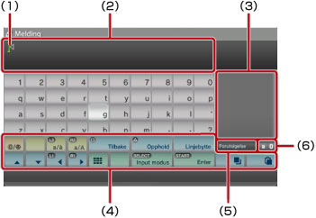
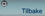
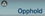
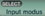
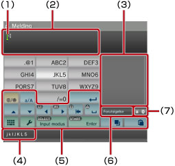
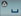
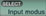

Om XMB™-menyen > Bruke tastaturet
Bruke tastaturet
Tastaturet vises automatisk hvor det trengs innlegging av tekst. Disse instruksjonene forutsetter bruk av engelsk tastatur. For informasjon om bruk av andre språktastaturer, se user's guide for the respective language.

(1) |
Markør |
|---|---|
(2) |
Tekstfelt |
(3) |
Viser forutsigende valg |
(4) |
Operasjonstaster |
(5) |
Vises når det forutsigende modus er på |
(6) |
Viser inngangsmodus |
Liste over taster
Tastene som vises varierer avhengig av inngangsmodus og andre betingelser.
 |
Setter inn et symbol eller uttrykks-ikon |
|---|---|
 / /  |
Bytter bokstavtypene som skal legges inn |
| Flytter markøren | |
 |
Sletter tegnet til venstre for markøren |
 |
Setter inn et mellomrom |
| Setter inn et linjeskift | |
 / /  |
Kopierer eller limer inn tekst |
 |
Bytter til minitastatur |
 |
Bytter inngangsmodus |
 |
Bekrefter tegnene som er blitt skrevet men ikke lagt inn/Avslutter tastaturet |
Legge inn tegn
Hvis du bruker seermodus, kan du legge inn de første fem bokstavene av ordet, som vil ta fram en liste av alminnelig brukte ord som begynner med disse bokstavene. Du kan bruke retningstastene for å velge det ordet du ønsker Etter at du er ferdig med å legge inn tekst, velg "Enter"-tasten for å avslutte tastaturet.
Tips
- Du kan ikke bruke uttrykks-ikon i enkelte input-moduser.
- Språkene du kan bruke for å skrive inn tekst støttes av systemspråkene. For eksempel, hvis systemspråket er satt til Norsk, kan du skrive inn norsk tekst. Du kan stille inn systemspråket med å gå til
 (Innstillinger) >
(Innstillinger) >  (Systeminnstillinger) > [Systemspråk].
(Systeminnstillinger) > [Systemspråk]. - Du kan tømme hele tekstfeltet ved å trykke knappene
 + L1 samtidig.
+ L1 samtidig.
Bruke et tilkoplet tastatur
Du kan skrive inn tekst med et USB-tastatur eller et Bluetooth®-tastatur (begge selges separat). Når tekstinngangsskjermen vises, og hvis noen taster på det tilkoplede tastaturet blir trykket, vil tekstinngangsskjermen gi deg mulighet til å bruke det tilkoplede tastaturet.
Tips
- For detaljer om tilkobling av et Bluetooth®-tastatur, se (Innstilinger) >
 (Tilbehørinnstilling) > [Administrer Bluetooth®-enheter] i denne manualen.
(Tilbehørinnstilling) > [Administrer Bluetooth®-enheter] i denne manualen. - Du kan ikke bruke seermodus når du bruker det tilkoplede tastaturet.
- Du kan legge inn et linjeskift i tekstfeltet ved å trykke ALT + ENTER. Du kan kun legge inn et linjeskift når dette er aktuelt, f.eks. når du skriver en melding under kategorien
 (Venner).
(Venner). - Du kan tømme hele tekstfeltet ved å trykke SHIFT + TILBAKE samtidig.
- Med Ctrl + V kan du lime inn tekst som har blitt kopiert. Den sist kopierte teksten limes inn.
Bruke minitastaturet
Hvis du velger fra tastaturet i ful størrelse, vil det bytte over til minitastaturet. Flere bokstaver er tildelt til en enkel tast på minitastaturet.

(1) |
Markør |
|---|---|
(2) |
Tekstfelt |
(3) |
Viser seervalg |
(4) |
Viser bokstavene som kan skrives inn med den valgte tasten. |
(5) |
Operasjonstaster |
(6) |
Vises når det seermodus er på |
(7) |
Viser inngangsmodus |
 -tasten, kan bokstaven som skrives inn endres. For eksempel, for å skrive inn [L], velg
-tasten, kan bokstaven som skrives inn endres. For eksempel, for å skrive inn [L], velg  og trykk på
og trykk på  for å flytte markøren slik at den kommer etter [L]. Velg deretter
for å flytte markøren slik at den kommer etter [L]. Velg deretter Tips
Du kan også bruke den enkle berøringstekstinnskrivings metoden. Bruk "Valgmuligheter" -tasten for å bytte tekstinnskrivingsmetode. Når du bruker enkel berøring, kan ord opprettes med kombinasjoner laget av en bokstav (eller tall) på hver valgte tast som vises som seertekst innskrivningsvalg. Hvis du for eksempel velger "DEF3"-tasten, blir ordene som starter med d, e, f eller 3 listet i seeralternativvinduet på høyre side av tastaturet på skjermen. Hvis symbolet ">" vises, skal du fortsette å skrive inn bokstaver til seervalgene vises.
Liste over taster
Tastene som vises varierer avhengig av inngangsmodus og andre betingelser.
 |
Setter inn et symbol |
|---|---|
 |
Bytter mellom øvre og nedre tilfelle |
 |
Setter inn et linjeskift |
| Flytter markøren | |
 |
Sletter tegnet til venstre for markøren |
 |
Setter inn et mellomrom |
 / /  |
Kopierer eller limer inn tekst |
 |
Bytter til tastatur i full størelse |
 |
Viser alternativmenyen |
 |
Bytter inngangsmodus |
 |
Bekrefter tegnene som er blitt skrevet men ikke lagt inn/Avslutter tastaturet |